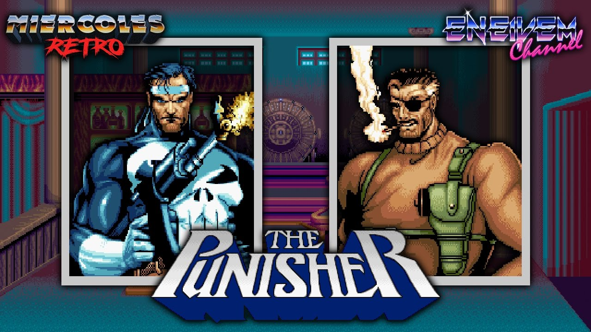
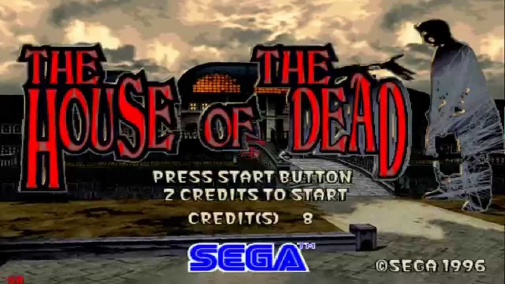

Las máquinas Arcade se definen como aquellos aparatos de entretenimiento que funcionan con monedas para ejecutar juegos de tipo Arcade y por lo general, eran instaladas en sitios públicos para el disfrute de los clientes (por ejemplo: salas de juego, bares, restaurantes, etc.). De ese modo, dieron inicio a la gran revolución de los videojuegos en todo el mundo durante un periodo conocido como “la edad de oro de los videojuegos de Arcade”, que se mantuvo desde principios de los años 70’ hasta finales de los 80’. Por lo que, durante ese tiempo, existieron diferentes soluciones que servían para ejecutar los juegos de Arcade con controles fáciles de manejar y niveles cortos. Tomando en cuenta que, dichas particularidades la usaron para mantener a los jugadores por un corto tiempo dentro del videojuego, con la finalidad de que constantemente debieran insertar más monedas o créditos a la máquina Arcade. Por su parte, es ideal hacer referencia a las principales características que mostraban los videojuegos de Arcade, para así también entender un poco la funcionalidad de este tipo de máquinas de antaño: El puntaje es el objetivo principal: El principal objetivo era alcanzar la mejor puntuación posible para que el jugador logrará registrar su record, en lugar de terminar el juego. Por lo que, muchos videojuegos de Arcade eran infinitos. Sistema de vidas: Tradicionalmente, se otorgaban tres vidas, pero siempre dependía de cada juego. Las cuales, al cometer un error se consumían y eran necesario reiniciar el nivel o el juego. Dificultad ascendente: El juego en la máquina de Arcade comienza muy fácil, pero al avanzar entre niveles, se va aumentando la dificultad y así, eventualmente, logra superar la capacidad del jugador. Interrupciones mínimas: Era posible pasar de inmediato a la siguiente fase, pues las escenas intermedias se caracterizaban por ser muy fugases. Límite de tiempo: Todos los niveles del juego de tipo Arcade, en estas máquinas, contaban con un tiempo determinado y si el mismo se agotaba, el jugador perdería una vida. Por ello, las personas no debían tardar tanto en un mismo nivel.
Habia diferentes tipos de juegos,caracterizados principalmente para ser competitivos y de 2 (o mas) jugadores. Ya sea de modo cooperativo o para enfrentarse entre ellos, todo esto sin descartar el modo de un solo jugador.
Juegos de pelea(fighting)
Estos juegos se caracterizaban por ser rapidos y su objetivo era que 2 jugadores se enfrenten controlando los personajes mediante golpes,combinaciones y poderes unicos de cada personaje.
The King Of Fighters 94

El KOF y su larga saga de continuaciones lidero los 90 como uno de los juegos mas concurridos. Con un sistema de 4 botones, combos rapidos y equipos de 3 personajes, gano rapidamente popularidad,sobre todo en los jugadores mas veteranos ya que juntaba personajes de varias sagas de SNK como Fatal Fury y Art Of Fighting.
Mortal Kombat
Nacido de Midway escalo popularidad muy rapidamente debido a su violencia explicita, su estilo de diseño de personajes con actores reales y su "Fatality" movimientos finales en los cuales se mataba al enemigo violentamente. Con una mecanica de 5 botones(4 golpes y un boton para cubrir,que mas adelante agregaria otro boton mas para correr) y movimientos los cuales variaban del resto ya que casi no se usaban movimientos circulares con la palanca, supo ganar su lugar en el podio con los mas grandes siguiendo vigente con sus continuaciones hasta el dia de hoy.
Street Fighter

Se podria decir que es el padre de los juegos de pelea multijugador,aunque su popularidad estallo con Street Fighter 2,cambiando sus controles de 2 botones gigantes(un puñetazo y una patada) 6 botones(3puñetazos y 3 patadas con sus variaciones de "debil","media" y Fuerte"). Y dando caracteristicas muy distintivas a sus personajes,como poderes propios y diseños unicos.
Beat em Up/Run and Gun
Juegos de aventura "Side Scroll" con numero limitado de vidas y dificultad ascendente. El personaje siempre se encuentra rodeado de muchos enemigos mientras avanza por la pantalla para enfrentarse a un jefe al final del nivel.
Metal Slug

Producto de SNK lanzado a mediados de los 90 es muy conocido por su sentido del humor y su animación hecha a mano, por lo que es considerada como una de las mejores y más destacadas series en su género. Se podia jugar de hasta 2 jugadores recolectando powers up,como diferentes armas,bombas y vehiculos con energia y municion limitada. En la mayoria de sus juegos cuentan con 6 niveles con un jefe final cada uno.
Teenage Mutant Ninja Turtles "TMNT-BeatEmUp"

Es un beat 'em up producido por Konami basado en la serie animada de 1987, Teenage Mutant Ninja Turtles. El jugador elige una de las cuatro tortugas: Leonardo, Michelangelo, Donatello, y Raphael. Luego Shredder secuestra a la amiga de las tortugas, April O'Neil y a su mentor Splinter, que deben dar caza, salvar a sus compañeros, y derrotar al malvado Shredder. Hasta 4 jugadores (2 en algunas versiones) pueden tomar el control de cualquiera de las tortugas. Donatello tiene ataques más lentos pero de mayor alcance, Michelangelo y Raphael tienen ataques rápidos pero de corto alcance, y Leonardo es una tortuga bien balanceada, con una velocidad y rango media.
The Punisher
Publicado por Capcom en 1993 con las estrellas antihéroes del comic de Marvel The Punisher, y el coprotagonista Nick Fury como personaje del segundo jugador. Es un beat 'em up donde Punisher y Fury tienen la misión de frustrar los crímenes de lord Kingpin,usando la misma formula de final fight llego a hacerse muy popular en los 90 junto con su port a sega genesis.
Autos/Carreras
Como su mismo nombre lo indica eran juegos de conduccion,muy limitados con el tiempo donde existian checkpoint para aumentar este tiempo y seguir avanzando. De mauinas caracteristticas ya que simulaban ser un automovil,con su respectivo asiento, volante,acelerador,freno y cambio de marchas.
OutRun
La idea es recorrer cinco etapas antes de que se termine el tiempo, para conseguirlo nos pondríamos a los mandos de un Ferrari Testarossa descapotable rojo con una mujer rubia como acompañante. Para llegar a la meta hay que recorrer cinco etapas, al final de cada etapa el camino se divide en dos y se puede elegir la siguiente etapa entre dos posibles, solo la primera (Coconut Beach) estaba presente en todas las partidas. Una vez tomada la bifurcación del final de cada etapa se cruza una meta volante (Check Point) que aumenta el tiempo restante de partida. Cuando este tiempo llega a 0, la partida acaba y un mapa describiendo las etapas recorridas aparece. Si conseguimos finalizar la quinta etapa antes de que se acabe el tiempo, aparece un final, cada final es diferente en función de cuál sea la última etapa, ya que hay 5 quintas etapas posibles.
Crazy Taxi

El jugador puede elegir alguno de los cuatro taxistas (Axel, B.D Joe, Gena y Gus) para recoger personas y llevarlas hacia donde indica la flecha de dirección antes que el tiempo se acabe.El principal objetivo del juego es recoger a los clientes y llevarlos a su destino elegido lo más pronto posible. En el transcurso, se puede ganar dinero mediante la realización de trucos, como contactos con otros vehículos. El jugador se dirige al destino por una gran flecha verde en la parte superior de la pantalla. La flecha no se ajusta sobre la base de los obstáculos, sino que más bien apunta en la dirección general del destino. Una vez que el jugador llega al destino, debe dejarlo dentro de una zona especificada. Cuando se llega al destino, se suman la tarifa de el cliente más el total de dinero que el jugador ha ganado, un puntaje se otorga dependiendo del tiempo que el jugador tardó en completar el recorrido. Si el temporizador del cliente se agota antes de que el jugador llega a su destino él salta fuera del taxi. Bajo las reglas de Arcade, el jugador comienza con un plazo inicial de un minuto, que puede ampliarse a través de bonos de tiempo ganado en entregas rápidas.Su banda sonora cuenta con la participacion de The Offspring y Bad Religion.
Daytona Usa

Arcade predilecto,incluso exploto su popularidad en argentina por los torneos organizados por un programa de la epoca, Nivel X, era bastante concurrido por sus premios y popularidad.El jugador compite usando un automóvil de serie (similar a los mostrados en NASCAR), solo contando con tres circuitos para elegir, así como puede optar por transmisión automática o manual. Para dificultar las cosas, Daytona USA tiene límite de tiempo, en donde si no cruza el punto de control o la línea de meta antes de que se acabe el tiempo, acaba la partida. Cada máquina de videojuegos cuenta con cabinas o habitáculos de conducción simples o dobles, provistos a cada cabina de un volante que gracias a un sistema de contrapesos y vibradores emula las vibraciones y los "tirones" que un verdadero auto transmitiría, generando mayor realismo en el jugador. Cuenta con dos pedales, uno de freno y un acelerador, cuatro botones de selector visual, que son parachoques, interior, exterior cercano y exterior lejano y una caja de cambios de cuatro marchas en forma de "H", ubicada a la derecha del volante.
Shooters
Destacaban por usar pistolas de luz como controles y en la moyoria de los casos ser para 2 jugadores,ya sea de manera cooperativa o competitiva.
The House Of The Dead
Shooter de 2 jugadores cooperativo,donde se avanza contra hordas de zombies y un jefe en cada nivel. Durante el trascurso del nivel se puede ayudar a los civiles/compañeros de equipo que son atacados por los zombien para ganas una vida extra.Como la mayoria de los shooters arcade de la epoca utilizaba pistolas de luz,estas funcionaban junto con la pantalla CTR,para recargar se disparaba fuera de la pantalla y el juego autoavanzaba una vez muertos los enemigos de la pantalla.
Point Blank

Se trataba de minijuegos donde se competia contra el tiempo tratando de hacer la mayor cantidad de puntaje posible por nivel,se podia jugar de 2 jugadores de forma competitiva,en la pantalla se elegia la dificultad y el minijuego en una pantalla con 4 cuadros.
Silent Scope

. El juego pone al jugador en la piel de un francotirador durante una serie de incidentes terroristas. El juego usa un rifle que está montado en la consola, lo que requiere que los jugadores alteren físicamente su posición para disparar con precisión. Además, la mira del rifle muestra una vista de cerca de una pequeña parte de la pantalla, que representa la vista de largo alcance del francotirador del área donde apunta el rifle. Ciertas áreas del escenario son oscuras y requieren que los jugadores usen visores nocturnos para detectar y disparar a los oponentes. El jugador puede disparar cinco tiros seguidos antes de que se requiera recargar. Contaba con un modo multiplayer en los cuales los jugadores se enfrentanban en distintos escenarion teniendo que encontrar y matar al contrario, para esto usaba la mira del arma.